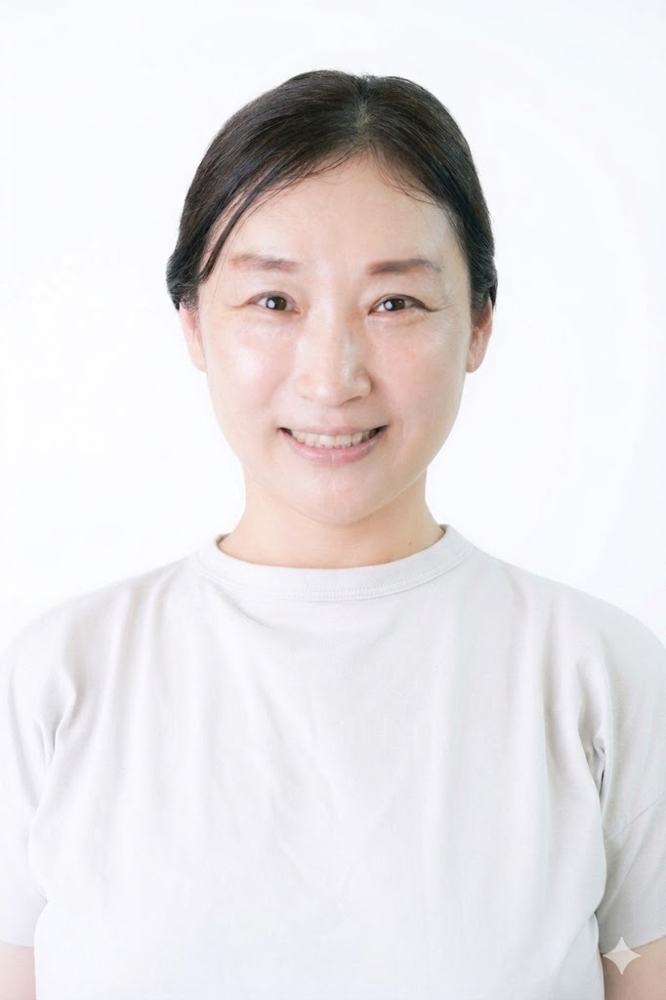

HOTTO YOGA
認定ヨーガ療法士 ／ ほっとヨガ教室 10年 ／ オンラインヨガ生徒募集中
ほっとヨガ教室は、認定ヨーガ療法士・金栄子が案内する、やさしいヨガのお教室です。イスに座ってできる介護予防のためのヨーガ療法をはじめ、地域で10年。かたい身体も、初めての方も、不調をかかえている方も。ご自分のペースで、呼吸と姿勢をゆっくり整えていきましょう。
10年
地域でヨガをお伝えして
89歳
の生徒さんも、元気に通う
週2回
に増やしたくなると、ご家族から
FEATURED PROGRAM
イスに座りながら、無理せずできる簡単なヨガです。体操・呼吸法・リラクゼーション・瞑想を組み合わせ、高齢者の方のQOL（睡眠の質、身体機能、精神的健やかさ）向上と、介護予防をサポートします。
さまざまな予防効果が期待できます
心
体
脳
コミュニティ
ヨーガ療法で介護ストレス・ケア
「今ここ」に注意を向けるマインドフルネスな態度が介護のストレスの軽減や、心身の健康を改善する効果があり、家族や介護者のストレス軽減として、ただ単に介護から離れたりすることよりも、効果があるとされています。
弥栄神社 例大祭のイスヨガ
毎年、お祭りの日に弥栄神社さんの拝殿で、イスに座ってヨガを行っています。
生野区内 各施設への出張
はたけもりさん他、生野区内でイスに座りながら行う介護予防のためのヨガを開催しています。
ABOUT
ヨーガ療法は、体操、呼吸法、リラクゼーション、瞑想を組み合わせて、心と体の健康を維持、向上させるセルフケア法です。
高齢者のQOL（睡眠の質、身体機能、精神的健やかさ）を向上させると同時に運動機能（バランス維持、柔軟性）の向上にも有用です。体を動かすときに、ゆっくりと呼吸を感じながら行うことによって、自律神経の働きが安定し、深いくつろぎや穏やかな気持ちが高まる、体の痛みの感覚が和らぐなどストレスを軽減する効果があると言われています。
アイソメトリック・アーサナ
自分の持っている力の分だけで押し合ったりする、安全性の高い等尺運動です。
呼吸法
ゆっくり呼吸をしたり、呼吸に合わせて身体を動かしたりします。
リラクゼーション法
目を閉じて、カラダの休まる感覚を意識します。
瞑想法
昔の思い出を振り返り、心の記憶の整理をしていきます。
FOR YOU
VOICE
息子が「お母さん何歳？」って聞くから、「あんた何言ってんの、お母さん89歳やんか」って答えたら、息子が「えっ？」ってびっくりしました（笑）。89歳になっても、これからもヨガを続けていきます。
— 89歳の生徒さん
“
ヨガ療法も好きだけど、先生の人柄とか雰囲気が好きで、みんな通ってるんですよ。
— 生徒さん
“
娘が「お母さん、週1回じゃなくて週2回ヨガ行き」って言うんです。家族からも勧められるヨガです。
— 生徒さんのご家族より
“
奥さんに心配をかけたくなくて、ヨガ教室に通っています。
— 男性の生徒さん
TEACHER

金 栄子
認定ヨーガ療法士
ほっとヨガ教室として10年、呼吸法とやさしい動きを通じて、心と身体をゆるめる時間をお届けしています。弥栄神社の例大祭でのイスヨガや、はたけもり他、生野区内での介護予防のためのヨガも開催中。初めての方も安心してご参加いただけるよう、おひとりおひとりのペースに寄り添ったレッスンを心がけています。
講師紹介の詳細 →CONTACT